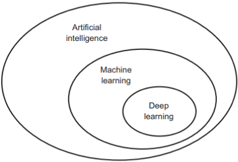

In the beginning, when we say artificial intelligence, we need to independently define what we should purify. We need to define. Whatartificial intelligence, machine learning and What is deep learning and how is it implemented?
Artificial intelligence began with the emergence of a handful of pioneers in the 1950s. was born. The emerging field of computer science computers are made for these purposes and He started asking if it could be done. "Thinking" still exists today A question whose consequences we are investigating. The brief description of the field is will be: normally by humans automating intellectual tasks performed into the bargain. Therefore, artificial intelligence includes machine learning is a general field. For example, the first chess programs were only It contained specially prepared hard-coded rules. And It did not qualify as machine learning. quite a long time Throughout the years, many experts have argued that human-level artificial intelligence He believed that it could be achieved in the following way: Programmers, a set of clear rules large enough to manipulate They had to prepare it manually, then the system in the 1980s explosion. Symbolic AI has well-defined logical Although Chess has proven to be suitable for solving problems While playing, finding clear rules to solve more It turned out to be challenging. image classification, speech complex, fuzzy problems like recognition and language translation. A new approach has emerged to replace symbolic artificial intelligence. output: machine learning
Deep learning models usually consist of many layers, and these layers are designed to perform different tasks such as representing data, learning features, and producing results. Here are the common types of layers found in a typical deep learning model:
Each layer helps the model perform a particular task better. and these layers usually deep learning by creating an interconnected structure creates the model.
Weights are often used in a deep learning model. determined during training. The training process is a model learning the task and performing better on it allows it to show. Weights represent the input data of the model. matrix and vectors that transform it into output, and the training process Optimizes weights. Here is the correct value of the weights The main factors that enable it to be found are:
Hyperparameters from training a machine learning model determined beforehand and controls the learning process of the model. are parameters. These parameters determine the architecture of the model, the learning It includes the pace and other factors that regulate the training process. Hyperparameters affect the performance of the model and It is important that they are set properly. Here are some common hyperparameters and the general meanings of these parameters:
Neural Networks are widely used to perform various tasks. It has a wide application area. Image classification, language in many areas such as processing, voice recognition and predictive analysis. is used successfully. Deep learning, bigger and more allows the use of complex Neural Networks, which where more sophisticated features and tasks can be learned It means.